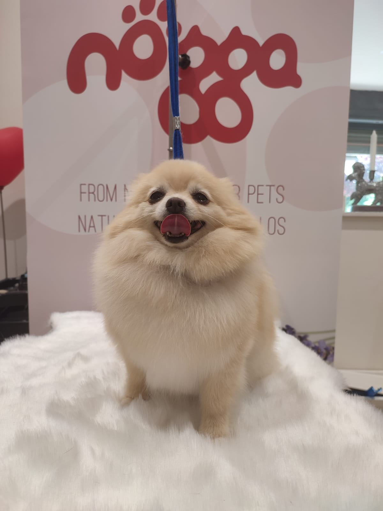

Tu perro entra. Sale espectacular.
Especialistas en stripping y razas de pelo difícil — schnauzer, akita, terrier… Aquí tu peludo no es uno más: sale precioso y a gusto, con consejos de verdad para cuidarlo en casa.
Pedir cita por WhatsApp →
Te respondemos rápido y te asesoramos sin compromiso 🐾
 antes
antes
Llega

despuésSale
del "necesita un buen sitio" a "¡ha quedado espectacular!"